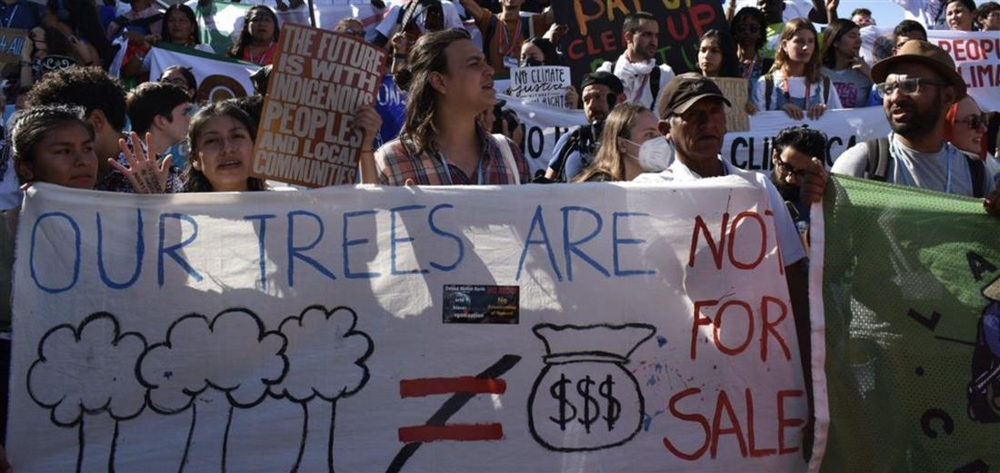
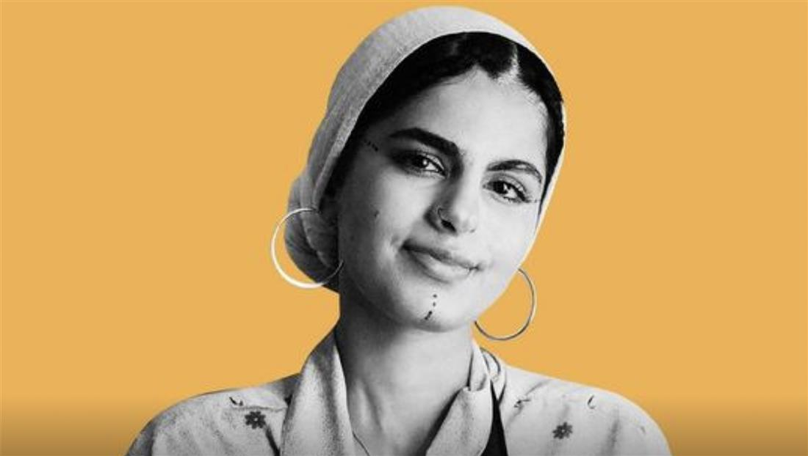

Youth in Action
Climate change has increased levels of uncertainty about our future. As its impacts intensify over time, one thing has become certain: We will leave the Earth to today’s children and young people, and to future generations.
The world is home to 1.8 billion young people between the ages of 10 to 24 — the largest generation of youth in history. Young people are increasingly aware of the challenges and risks presented by the climate crisis and of the opportunity to achieve sustainable development brought by a solution to climate change.
Young people’s unprecedented mobilization around the world shows the massive power they possess to hold decision-makers accountable. Their message is clear: the older generation has failed, and it is the young who will pay in full — with their very futures.
Young people are not only victims of climate change. They are also valuable contributors to climate action. They are agents of change, entrepreneurs and innovators. Whether through education, science or technology, young people are scaling up their efforts and using their skills to accelerate climate action.
My generation has largely failed until now to preserve both justice in the world and to preserve the planet. It is your generation that must make us be accountable to make sure that we don't betray the future of humankind. — United Nations Secretary-General, António Guterres
Voices and stories from around the world

Young people’s ‘green skills’ can help save the planet
Young climate advocates will join leaders of government and business at the Climate Ambition Summit, which represents a key milestone to accelerate action to limit warming to 1.5°C and ensure a just transition. UN News spoke with four members of the Secretary-General’s Youth Advisory Group on Climate Change about the importance of ‘green skills’ for youth and the messages they hope to deliver to leaders at the Summit.

Ayisha Siddiqa: “Young people aren’t just a quota to fulfil”
UN News spoke with Ayisha Siddiqa, a member of the Secretary-General’s Youth Advisory Group on Climate Change, about how her background and how it informs her work, recognizing young people as key climate stakeholders, and why poetry “can be a mechanism of quiet protest” in the face of the climate emergency.
Young people’s message to leaders at COP27
At COP27, two youth activists Elizabeth Wathuti and Archana Soreng and the winner of the #MyClimateAction contest Ewi Stephanie Lamma demanded urgent action from world leaders amid the worsening climate crisis.
SOURCE: UNTED NATIONS - YOUTH IN ACTION